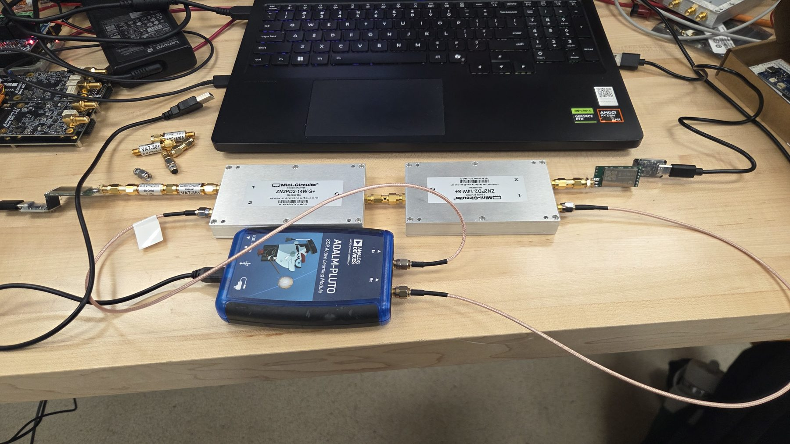
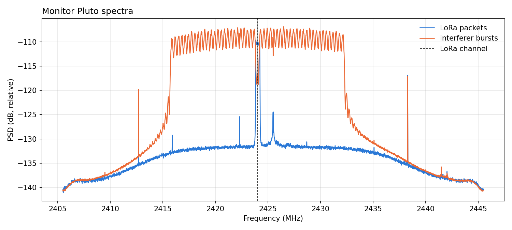

The question
LoRa and Wi-Fi both use the crowded 2.4 GHz band. LoRa is built to be robust, but how robust is it when Wi-Fi traffic is bursting on top of it? The answer depends on how strong the interference is, how often it's on, how far apart the two signals are in frequency, and which LoRa data-rate setting the radio uses. I wanted measured answers instead of rules of thumb.
Why a cabled bench
Over-the-air tests mix in multipath, people walking by, and whatever other Wi-Fi is in the building, so two runs of the same test rarely agree. Running everything through coax with fixed attenuators makes each measurement repeatable and lets me set the interference level precisely.
Bench design
Two DX-LR42 modules (Semtech SX1281) form the link, each driven from a laptop over USB-serial. The sender's signal passes through 60 dB of attenuation and is combined with interference from an ADALM-Pluto SDR, which generates 802.11a/g-like OFDM bursts at a set duty cycle and power. The combined signal is split: one path goes to the LoRa receiver, and the other goes back into the Pluto's own receive port, which works as a monitor. It measures the SIR and the airtime of each packet directly, so the result doesn't rely on calculated values.

What I built
- The bench: chose the attenuation, combining and splitting network, and validated it before running interference tests.
- Interference generator: Python code that drives the Pluto to transmit OFDM bursts (~16.5 MHz wide, 1 ms) at a precise duty cycle and power.
- Monitor: uses the Pluto's receive port to measure SIR and packet airtime from about +15 dB down to −40 dB.
- Automation: scripts that sweep SIR, duty cycle, frequency offset and the module's LoRa/FLRC data-rate presets, logging packet reception rate, goodput and RSSI for every combination.
- Collision model: a simple baseline. Below a capture threshold, a packet survives only if no Wi-Fi burst overlaps it.
First results
With the bench validated, the first interference runs show the real link doing better than the collision model predicts: at −30 dB SIR and 25% duty cycle, 49% of packets arrived versus 34% predicted. The simple overlap model counts packets as lost that the real radio still recovers.

What surprised me
I expected the measured packet reception rate to land close to the collision model. Instead, it came in well above it. The model assumes any packet hit by a Wi-Fi burst is lost, but in practice many of those “collided” packets still arrived intact. That points to LoRa’s forward error correction doing real work: it rebuilds packets whose symbols were partly corrupted by the interference. The question now is how much a packet can collide with OFDM bursts and still be successfully received.
What's next
Finish the full sweep across duty cycles, frequency offsets and data-rate presets, extend the collision model to account for error correction, and write up the results for publication.